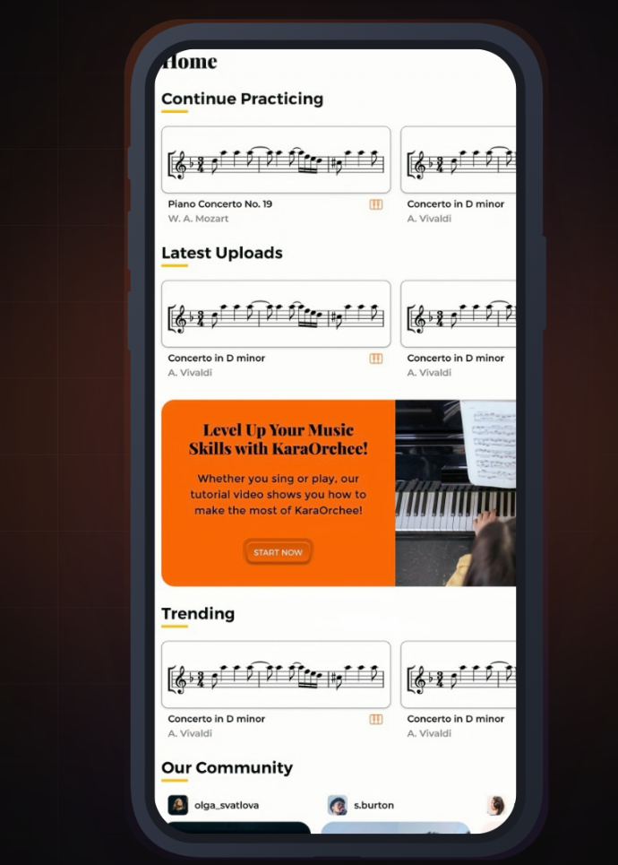

User Nunitoviews
Spoke with students, teachers, and music professionals to understand real needs.
Work / Product Strategy
Adaptive AI Music Platform
An AI-driven orchestral accompaniment platform that adapts to your timing and interpretation.

Many students struggle to find accompanists, face scheduling friction, and rely on static tracks that lack real-time responsiveness.
Research Process →
Spoke with students, teachers, and music professionals to understand real needs.
Gathered input from users to validate demand and key insights.
Synthesized findings into a focused product direction and go-to-market plan.
A human-centered strategy to make high-quality musical practice more accessible, engaging, and inclusive.
Next Project
AI × Engineering →